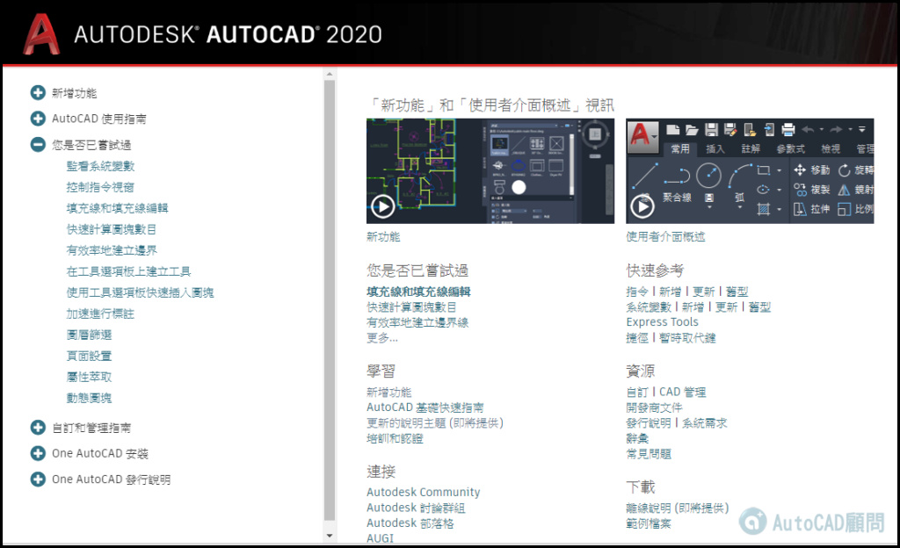

目前F1線上說明已經上線，可以先上去看看新功能～
感覺2020版本會是個經典版本，這回有著重2D功能，對於工作應該可以幫很大！
「圖塊」選項板、「清除」增強功能、「圖面比較」增強功能、「圖面測量」增強功能
AutoCAD 2020 即將開放，有興趣試用的會員朋友可以下載喔～
應該是明天就可以開放下載～

▼AutoCAD 2020 多國語言官方下載（30天試用）
http://www.autodesk.com.tw/products/autocad/free-trial#
※提醒各位朋友，若無法回覆文章，表示您尚未完成報到，報到完畢之後即可升等一般會員，即可回覆文章※